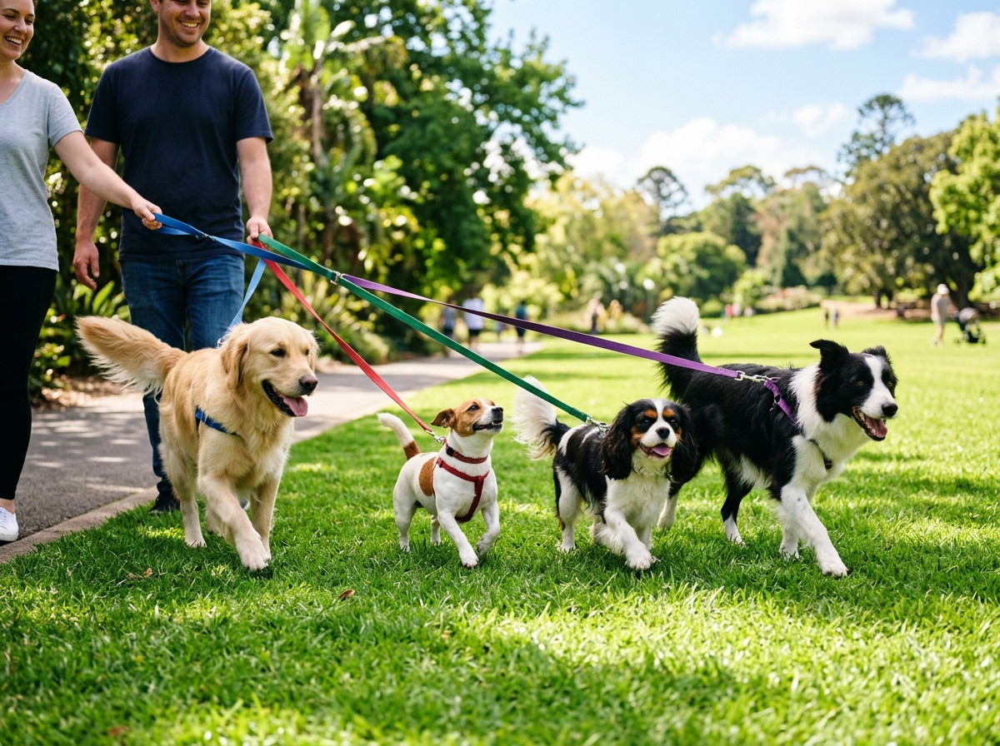

Modalidad Comunitaria
Paseo Social en Manada
El ejercicio en grupo ofrece beneficios psicológicos inigualables. Ayuda a perros con energía desbordante a canalizar tensiones mientras aprenden pautas de convivencia armónica junto a sus congéneres.
- Grupos Pequeños: Máximo 4 perritos seleccionados por temperamento y tamaño.
- Ruta Verde: Recorrido por parques arborizados y zonas de césped limpio.
- Estimulación Olfativa: Dinámicas guiadas de rastreo para relajar su mente.
- Seguridad Total: Paseadores con doble correa de seguridad y agua fresca.
Q15.00 /
paseo
Solicitar Este Servicio